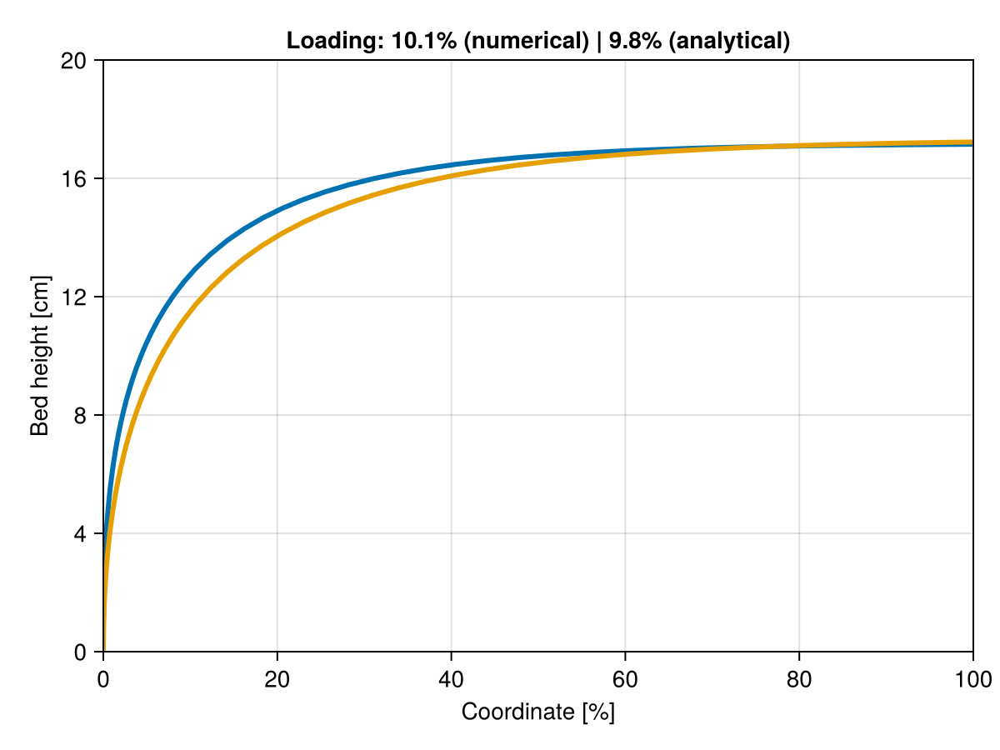
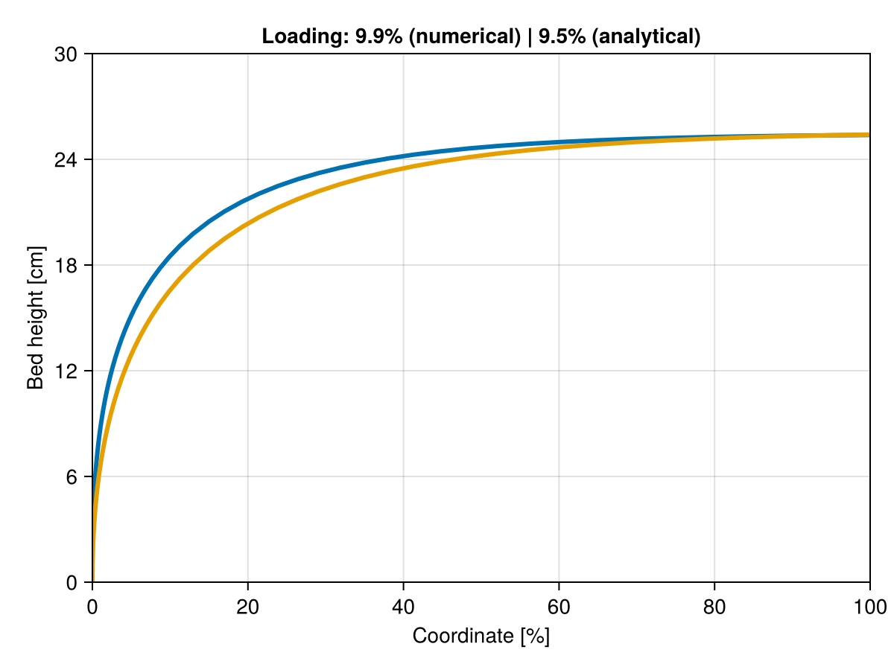

Kramers' model
Sample reference case
Here we make use of the current implementation to check if it correctly approximates the last example provided in reference paper from [2]. To minimize rounding errors causes by unit conversions, we provide the required functions to convert from imperial to international system in the solution process.
The next table summarizes the results. It is seen that the dimensionless numbers are well approximated. It must be emphasized that the reference estimates η̄ᵣ by a graphical method – it was 1952 – and the current value is considered a good enough approximation. Additionally, the equation was not integrated numerically as done here, but engineering relationships were used in the approximation. That said, the proper loading to be considered in our days is η̄ᵢ.
| Quantity | Reference | Computed |
|---|---|---|
| NΦ | 1.15 | 1.15 |
| Nₖ | 1.17 | 1.17 |
| η̄ᵣ | 5.65 | 5.46 |
| η̄ᵢ | 4.99 | 5.91 |
Note: the last value in column Reference above is not provided in Kramers' paper but computed from the approximate analytical solution provided by the authors. As we see here, it may get >20% error under some circumstances.
Verification of Table 3
In the next cell we provide the kiln dimensions used by Kramers (1952) to experimentally validate the model. Some data from their Tab. 3 is then loaded and all rows are simulated with current model. Fractional hold-up seems to be well correlated at least to a few percent of the reference value.
| tan(β) | n | ṁ | η̄ᵣ | η̄ᵢ |
|---|---|---|---|---|
| 0.0094 | 0.059 | 0.00515 | 11.1 | 10.8 |
| 0.0094 | 0.09 | 0.00268 | 5.4 | 4.7 |
| 0.0094 | 0.195 | 0.0132 | 8.799999999999999 | 8.9 |
| 0.0094 | 0.232 | 0.00724 | 4.3 | 4.8 |
| 0.01 | 0.04 | 0.00638 | 16.900000000000002 | 16.8 |
| 0.01 | 0.04 | 0.005 | 14.399999999999999 | 13.9 |
| 0.01 | 0.069 | 0.0092 | 15.0 | 14.6 |
| 0.01 | 0.069 | 0.00653 | 11.3 | 11.3 |
| 0.01 | 0.106 | 0.015 | 16.2 | 15.3 |
| 0.01 | 0.159 | 0.012 | 9.2 | 9.5 |
| 0.01 | 0.238 | 0.0155 | 8.3 | 8.4 |
| 0.01 | 0.238 | 0.0119 | 6.800000000000001 | 6.9 |
Dimensionless profiles
Next step in validation is to check profiles in dimensionless format, as done by Kramers in their Fig. 3. Notice that here we used the numerical integration curves instead of the analytical approximation of profiles, so reproduction and consequences of results are not exactly the same.

Comparison with analytical
The final step in model validation is to compare the approximate analytical solution proposed by Kramers and the results of numerical integration. It is worth mentioning that numerical integration remains the recommended method because one does not need to verify the ranges of validity of analytical approximation for every use case.
Industrial cases
The following illustrates a practical use case of the model. Next we scan a parameter space to confirm once again the model suitability as an alternative to analytical engineering estimations as per Peray's notebook.
The following table confirms the expected values as per Peray.
| ṁ | ω | η̄ | τᵢ | τₚ |
|---|---|---|---|---|
| 33.6 | 0.85 | 10.0 | 203.0 | 203.0 |
| 33.6 | 1.2 | 7.0 | 141.0 | 144.0 |
| 43.2 | 0.85 | 13.0 | 207.0 | 203.0 |
| 43.2 | 1.2 | 9.0 | 143.0 | 144.0 |